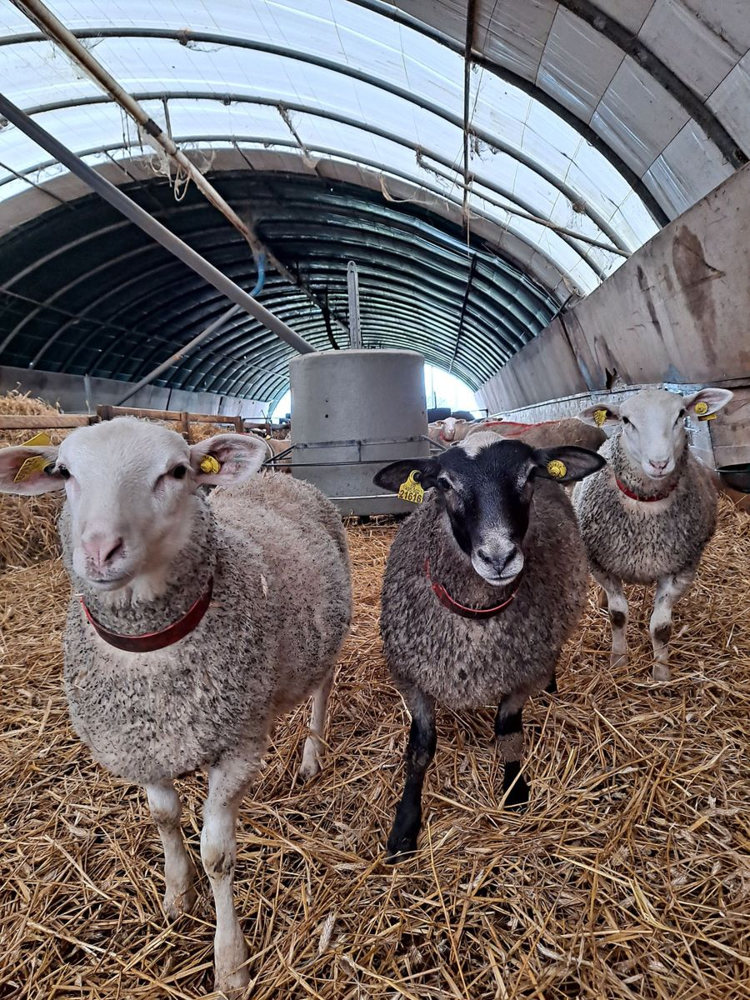
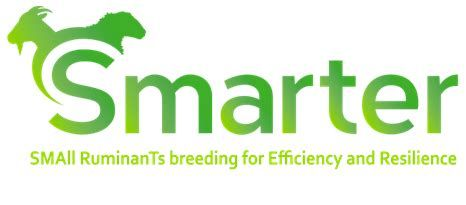

Le schéma de sélection
Un schéma collectif qui place la race au centre
Le schéma de sélection Romane est un schéma collectif qui place la race au centre de toutes les orientations.
L'objectif est d'obtenir des animaux rentables, faciles à élever, capables de s'adapter à tous les systèmes de production grâce à leur rusticité.
Les stations de contrôle sont le pivot de ce travail. Aujourd'hui, nous bénéficions en plus des apports des techniques de génomique, et nous travaillons en plus la résistance aux parasites gastro-intestinaux.

Les quatre piliers
Les projets
L'OS Romane participe à plusieurs projets de la filière. Nous sommes toujours en veille sur les améliorations à apporter à notre schéma de sélection et sur les nouveaux caractères à évaluer, dans l'optique de faire évoluer notre race au service des éleveurs.
L'OS Romane poursuit le travail sur le programme OSIRIS (Objectifs de Sélection Innovants en Ruminants et Indices de Synthèse). Son objectif est de fournir un outil d'aide à la décision, qui permettra aux Organismes de Sélection de définir les orientations de leurs races en se basant sur les valeurs économiques des caractères.
Ce programme répond à notre objectif d'avoir un schéma de sélection efficace, qui offre aux éleveurs des animaux ayant un vrai potentiel de rentabilité.
